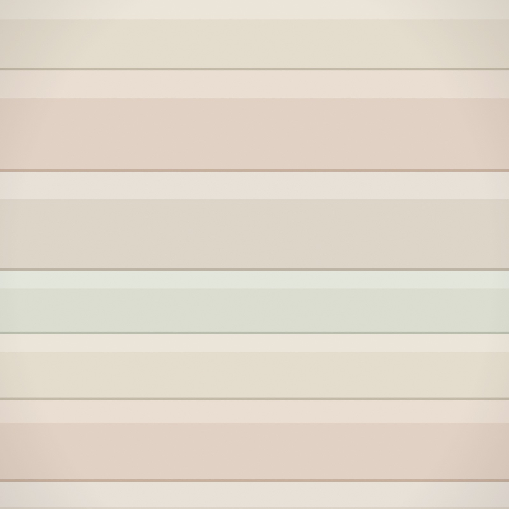

Custom Drapery, Shades & Soft Furnishings for Beautifully Considered Homes.
Amy K Clark Design helps you choose beautiful fabrics and turn them into finished details that feel personal, polished, and right for the room.
Services
Design guidance for custom window treatments, upholstery, and soft furnishings, from the first fabric conversation to the finished installation.
Custom Drapery
Drapery designed around the room, the architecture, and the way the space should feel.
Blinds & Shades
Beautiful, functional blinds and shades with personal guidance, measurement, and installation.
Fabric Consultation
Focused guidance for choosing fabrics, colors, patterns, trims, and details that work together.
Upholstery
Reupholstery that gives meaningful furniture new life through the right fabric and finish.
Pillows, Cushions & Soft Furnishings
The final layer of color, texture, and personality for a room.
Fabrication & Installation
Technical knowledge considered from the beginning, so treatments are made correctly.
A Designer's Eye, A Workroom's Understanding
Amy brings together fabric selection, design guidance, fabrication knowledge, and installation experience, so every decision is made with the finished room in mind.
Fabric, chosen well
Access to designer fabric lines you will not find in a big box store, and honest guidance on what will actually work in your room.
Made, not ordered
Decades of hands-on fabrication experience means every hem, lining, and pleat is specified by someone who knows how it is built.
Installed to finish
Measurement and installation are part of the design, not an afterthought, so the treatment hangs the way it was imagined.

It started in a grandmother's attic in Covington.
Amy's relationship with textiles began among turn-of-the-century trunks filled with clothing, lace, fur, texture, and detail. Fascinated by how skilled makers could take intricate pieces apart and build them again, she taught herself to sew and began creating the things she admired but could not afford.
Decades later, that same curiosity shapes every project she takes on in Cincinnati and Northern Kentucky.
A calm, considered process
Consultation
Amy visits your home, gets to know the room, measures, and talks through priorities, function, style, and budget.
Design & Sourcing
She recommends treatment direction, fabrics, trims, hardware, and details with the finished room in mind.
Fabrication & Coordination
Every detail is specified and created or ordered for your project.
Installation & Finishing
Treatments are professionally installed and adjusted so the room feels complete.
“Amy made my house into a home.”
Let's talk about your windows.
Based in Cincinnati and Northern Kentucky, available for select travel projects.